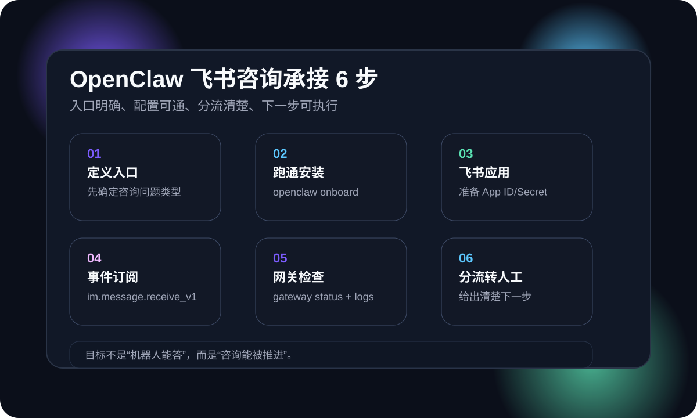

这篇先解决什么
先解决“咨询进来没人接、飞书配置不通、信息收不上来、下一步动作不清楚”这四类最现实的问题，而不是先堆复杂机器人。
很多一人公司已经有官网和内容，但咨询一来就卡住：到底该进哪个群、谁来接第一句、怎么让咨询变成下一步动作。这篇把 OpenClaw + 飞书的最小落地路径拆成 6 步，目标只有一个：让官网咨询有人接住、有人分流、有人推进。

先解决“咨询进来没人接、飞书配置不通、信息收不上来、下一步动作不清楚”这四类最现实的问题，而不是先堆复杂机器人。
openclaw onboard 走起步流程，网关状态必须先通。im.message.receive_v1，否则消息进不来。OpenClaw 的定位是“个人 AI 助理”，强调运行在自己的设备上，通过你已经在用的消息渠道来回答。Clawdbot 文档也明确说明：飞书通道走 WebSocket 事件订阅，不需要暴露公网 webhook。对一人公司来说，这意味着：不用额外部署一堆服务，就能把官网咨询接进你习惯的协作入口，并且还能保留人工接手的边界。
官网咨询先汇总到飞书，再决定要不要转人工、进群、或继续读文章。
OpenClaw 自己跑在本地或可控机器上，配置和日志都在手里。
不用先上复杂的客服平台，先把“接住 + 分流 + 推进”跑通即可。
每一步都围绕“能不能把咨询接成下一步动作”来设计，不追求花哨，只追求能跑。
不要一上来就把所有问题都交给机器人。先确定 1-2 类高频问题，例如“适合谁、怎么开始、多少钱、周期多长”。这一步会决定你的 FAQ、文章入口和下一步动作。
openclaw onboard 跑通起步路径OpenClaw 官方 README 推荐使用向导 openclaw onboard 初始化网关、工作区和渠道。对一人公司来说，先把这条最短路径跑通，比一开始就手动拼配置更稳。
按照 Clawdbot 飞书文档，先在飞书开放平台创建企业自建应用，拿到应用 ID 和应用密钥，并开启机器人能力。凭证准备不齐，后面所有步骤都会卡。
飞书通道使用 WebSocket 长连接事件订阅，关键事件是 im.message.receive_v1。文档强调这样无需暴露公网 webhook，所以更适合一人公司和小团队的最小部署。
配置完成后先跑 openclaw gateway status，必要时跟随 openclaw logs --follow 看是否收到了飞书事件。网关没起来，消息必然收不到。
把咨询分成“继续读文章 / 进入 FAQ / 直接联系”三类，并明确下一步动作（加微信、预约、电话）。这样 AI 才不是只答问题，而是推动咨询往下走。
openclaw onboard 跑完最小安装路径。不需要。Clawdbot 文档明确说明飞书通道走 WebSocket 事件订阅，不必暴露公共 webhook URL，这对一人公司更友好。
先查飞书事件订阅是否包含 im.message.receive_v1，再看 openclaw gateway status 是否正常，最后用 openclaw logs --follow 观察事件是否进入。
不会。你可以明确分流规则：基础问题由 AI 先答，高意向问题转人工或直接给联系方式。关键是下一步动作要清楚。
忽略“下一步动作”。只答问题不引导继续阅读、预约或沟通，咨询就停在原地，转化也会停住。
如果你还没建立咨询承接链路，先从这篇起步文开始。
把咨询信息收集清楚，才能让 AI 助理帮你提高效率。
如果你想直接把官网咨询接进飞书，我们可以一起梳理现状。
如果你已经有官网与内容，但咨询接不住，可以把你当前入口、FAQ 和飞书配置发来，我们先帮你整理成最小可执行清单。